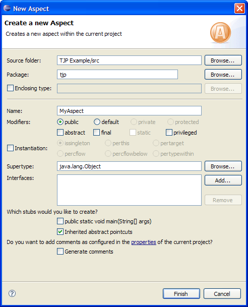
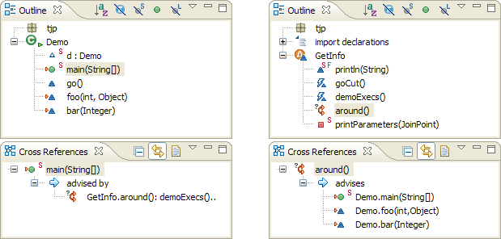
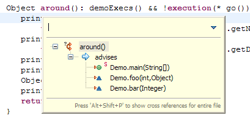
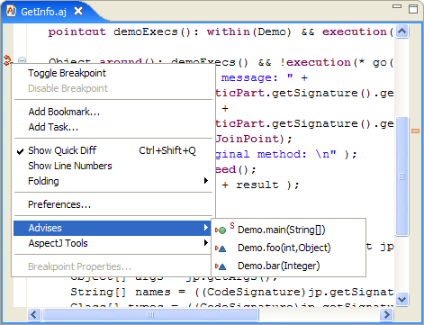
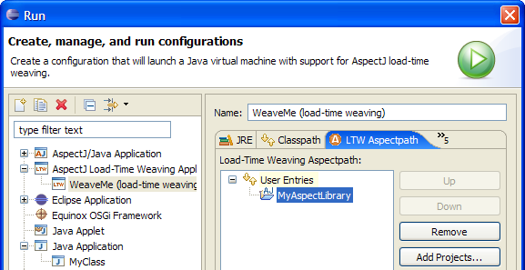
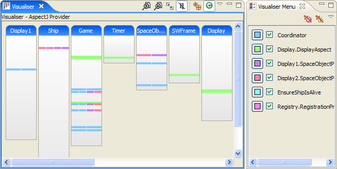
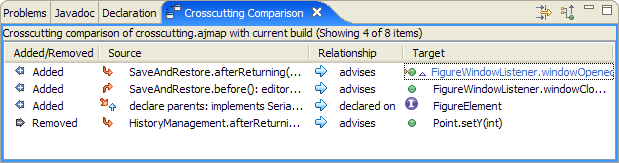

| Eclipse Corner Article |

Summary
The AspectJ Development Tools (AJDT) project is an Eclipse Tools project which enables the development of AspectJ applications in Eclipse. This article gives an overview of the capabilities of AJDT 1.4 for Eclipse 3.2 by describing several scenarios, including adding aspects to existing Java™ projects, working with aspects across multiple projects, and using the load-time weaving capabilities of AspectJ 5.Matt Chapman, AJDT Project Lead, IBM
October 16, 2006
For a Java developer just starting out with AspectJ, writing some simple AspectJ programs is a good place to begin. You might do this by using the examples in the AspectJ programmers guide, which are included with AJDT (File > New >Other >AspectJ > AspectJ Examples), or by reading some of the many excellent AspectJ books or articles available.
The process of creating a new AspectJ project in Eclipse is remarkably similar to that of creating a Java project: Simply select File > New > Project > AspectJ Project, or use the New AspectJ Project shortcut on the toolbar. The rest of the wizard is pretty much identical to the New Java Project wizard.
In fact, an AspectJ project retains its Java nature (and has an AspectJ nature added) so that any tools and plug-ins that operate on Java projects will also operate on AspectJ projects. The key difference is the builder used to compile the project: The AspectJ compiler is used instead of the JDT Java compiler. The AspectJ compiler itself is an extension of the JDT compiler, and is therefore fully capable of compiling Java code.
Due to the similarity of AspectJ projects and Java projects, most actions associated with Java projects apply equally to AspectJ projects. This includes creating source folders, packages, and classes, configuring the project's classpath, and editing Java source files with the Java editor. This article will therefore only cover the differences.
An aspect is AspectJ's unit of modularity and has much in common with a class in the Java language. Select File > New > Other > AspectJ > Aspect or use the New Type drop-down on the toolbar to open the New Aspect wizard, which is fairly similar to the New Class wizard with just a few different options, as shown below.

Figure 1. The New Aspect wizard
After creating a new aspect, it will be opened in the editor (the AspectJ editor this time). The file created has the .aj file extension, which is the designated extension for aspects in AspectJ (classes can be left in .java files). Try entering some AspectJ code in the new aspect. You should find the editor facilities fairly similar to those for Java code, including:
All very familiar, isn't it? A couple of things that are missing -- including quick fixes in aspects and content-assist of certain things such as pointcut names -- will be addressed by future versions of AJDT.
Saving your aspect will result in compilation of your project (unless you have build automatically disabled, in which case you need to press the Build button, just as with a Java project). If your aspect contains advice that affects code in your project, you should see some entries appear in the Cross References view and some markers down the left side of the editor. These are two of the ways AJDT shows you the crosscutting nature of your AspectJ projects.
The Cross References view and the standard Outline view can be considered partners. Whereas the Outline view shows the structure of the current document, the Cross References view shows the crosscutting relationships for the current element. A useful layout is to position the Cross References view below the Outline view, as shown in Figure 2 below. If this view is not visible, you can open it by selecting Window > Show View > Other > AspectJ > Cross References, or you can right-click on an element in the Outline view and select Open Cross References from the context menu.
Clicking within a method in the editor causes the Cross References view to show any crosscutting information for that method. From the left-hand side of Figure 2, you can see that the selected method is being advised by some around advice in the GetInfo aspect. You can click on that advice to navigate to it. The advice itself is then shown in the Cross References view, as shown in the right-hand side of Figure 2. This allows you to see the relationship from the other direction.

Figure 2. The Outline
and Cross References views for a class and aspect
You also have the option (via a toolbar button) to not link the Cross References view with the editor. If you select this option, the Cross References view will not respond to selections in the editor and Outline view, which can be useful if you want to keep a particular list of crosscutting information visible. Another option is to show the crosscutting information for the whole of the current file, instead of just the current element.
Some developers choose not to have the Outline view permanently visible, where it would take up valuable screen space. Instead, they use the Quick Outline (from the Navigate menu, or more typically by pressing Ctrl+O), which is an in-place version of the view that appears over the editor. The same functionality is available for the Cross References view. Pressing Alt+Shift+P (or you can configure the key binding yourself via the preferences) displays the Quick Cross References view, as shown in Figure 3. With the Quick Outline view, pressing the key binding a second time causes the view to also show inherited members. The Quick Cross References view uses a similar mechanism to switch between showing crosscutting information for the current element and for the entire file.

Figure 3. The Quick Cross References view
If you look at the editor for some source code that is being advised, you will see marker icons down the left-hand side of the editor. These indicate the presence and type of advice, using the same icons as in the Outline and Cross References views. There are different icons to indicate before, after, and around advice. Each of these icons has two variants: with and without a small question mark. The question mark indicates that there is a runtime test to determine whether the advice applies at that location, such as when the cflow designator is used in pointcuts. The variant without a question mark is used where the match can be completely determined at compile time.
If you right-click on the markers you will see an Advised By entry on the context menu and a submenu showing the source of the advice. If you select an entry there, the editor will open to show that advice. From the advice you will see additional markers that show the crosscutting relationship from the other direction, with an Advises submenu, as shown in Figure 4. These symmetrical markers allow consistent navigation between the source and targets of advice. Similar markers and submenus are used to indicate other crosscutting information, such as inter-type declarations.

Figure 4. Advice markers and context menus
New in AJDT 1.4 is the ability to customize the marker icons used for advice. You can do this via the AspectJ Tools > Configure Advice Markers... context menu. You can select different icons for different aspects, choosing from a set of provided icons or defining your own.
An image decorator is also used to show crosscutting information. If you look back to the Outline view for a class in Figure 2, you should see a small orange arrow to the left of three of the methods in the view. The arrow is an Eclipse image decorator for Java elements. It is used to indicate either that the given element is being affected by advice directly, or that it contains a join point that is being advised. This helpful visual cue appears just about everywhere that Java elements appear, including the Outline view, the Cross References view, and the Members view in the Java Browsing perspective.
After gaining some experience with AspectJ and AJDT in a simple test project, a typical next step for a developer would be to take an existing Java project and try extending it with an aspect or two. For example, you might want to add enforcement aspects, such as one to check for unwanted calls to System.out.println or Exception.printStackTrace, or production aspects, such as an aspect to implement persistence, or an aspect-oriented implementation of a design pattern.
Converting a Java project to an AspectJ project is straightforward. Simply right-click on the project and select AspectJ Tools > Convert to AspectJ Project. This adds the AspectJ nature to the project and switches it to use the AspectJ compiler, just as if you had created an AspectJ project from scratch. It is worth noting that this process can be applied to any project with a Java nature, including higher level ones such as Eclipse plug-in projects. The process is also reversible, with a context menu entry to remove the AspectJ nature and switch back to the Java compiler.
Once you have an AspectJ project instead of a Java project, you might wonder what differentiates them. Initially at least the answer is "very little." You'll continue to edit your Java classes with the Java editor using the standard document outline view and all the features you've come to rely on, including quick fixes, content assist, and early error indication via red squiggly lines. Likewise, saving changes to a class will result in a fast incremental compile of the project and you'll be able to set all the same compiler options from the project properties pages. Every legal Java program is a legal AspectJ program, so your code will compile just as it always has.
In fact, the AspectJ compiler is an extension of the Eclipse Java compiler and AJDT extends the JDT tooling as consistently and transparently as possible. This is what we mean when we talk about seamless integration. The goal of seamless integration is to make the first step of switching to an AspectJ project as easy as possible; thus paving the way for gaining real value from coding with aspects.
Building AspectJ source code requires two distinct phases; compiling the source in .java and .aj files to generate .class files, and then applying the aspects to the generated .class files. This second phase, known as weaving, is the key difference between AspectJ and Java compilers. The Java compilation process is controlled by the classpath setting, which makes types available for resolution by the compiler. The same classpath setting is used by the AspectJ compilation process and it is configured in exactly the same way in Eclipse. However, this setting is not sufficient to control both the compilation and weaving steps in all situations. This is why there are two extra settings available for AspectJ projects.
First, there is the inpath setting. Anything specified here will be made available to the weaver and so any aspects that apply will be woven in. Entries can be added to a project's inpath by right-clicking on the project, selecting Properties, then going to the AspectJ InPath section. Entries can be either JAR files or directories (class folders), such as the bin directory of another project. Anything on the inpath is sent to the project's output, after potentially being woven with aspects.
The second additional setting is the aspectpath. Whereas the inpath controls the list of things that get woven, the aspectpath controls what is woven into that list. In other words, any aspects specified on the aspectpath are made available to the weaving process, just as if they were present in source form in the project. This setting is controlled from the AspectJ Aspect Path property page and can contain either JAR files or directories.
An output JAR setting is also present in the AspectJ section of each project's property page. This setting causes the compiler to output class files directly to a JAR file, instead of to the project's output folder.
To see the above settings in action, consider an example workspace. There are two projects, one called MyAspects and another called WeaveMe. Both are AspectJ projects, although the second one may or may not contain any aspects of its own. The MyAspects project contains some aspects that are required in the WeaveMe project. To connect the two projects, simply right-click on the WeaveMe project, select Properties and go to the AspectJ Aspect Path section. Then, from the Libraries tab, press Add Class Folder and select the bin directory (or whatever the name of the output directory) of the MyAspects project.
Press OK to build the project with this new setting and, assuming pointcuts in the aspects match locations in the WeaveMe source code, apply the associated advice. The editor markers and Cross References view should still show the "advised by" relationships, but now the originating end of the relationship will be described as a binary aspect and you won't be able to navigate to it. Also, there will be no "advises" relationship from the aspect in the other project.
It is important to note that types supplied via the aspectpath also need to be available at runtime. Fortunately AJDT makes this easy for you -- instead of selecting Run > Java Application, you can use the new launch configuration Run > AspectJ/Java Application. This is the same as the Java launch configuration except that it automatically adds aspectpath entries to the runtime classpath. A second, unrelated difference is that AspectJ/Java launch configurations can also locate any main methods contained within aspects.
What if you had a project containing Java code, in either source form or in a JAR file, to which you wanted to apply aspects? If you needed to keep the aspects separate from the project you could leave it as a Java project and create an AspectJ project to do the weaving in. In this case, you would simply add an AspectJ InPath setting in the AspectJ project to refer to the Java code, using either the Add JARs button or the Add Class Folder button.
When doing binary weaving like this you no longer have any source code markers to show where advice is having an effect. A compiler option is helpful here: From the Other tab of the AspectJ Compiler settings for the AspectJ project (or from the global preferences), select the Output weaving info messages to problems view option. Now, whenever the project is built the Problems view will show information entries to indicate which types have been woven.
So far we have seen compile-time weaving, which is where the AspectJ weaving process takes place as the source code is compiled. When using aspects from other projects using the aspect path setting we were using binary weaving, which is when existing class files or JAR files are woven. A third possibility is load-time weaving, which is binary weaving that is deferred until a class is actually loaded by a class loader.
Consider an example workspace with an AspectJ project containing aspects called MyAspects, and a second project called WeaveMe, which can be either a regular Java project or an AspectJ project. With no aspect path or in-path setting, no weaving will take place at development time. Instead we will use the load-time weaving capabilities of AspectJ 5 to perform the weaving as the application is launched.
Load-time weaving is configured by AJDT using a launch configuration. Select Run > Run... from the toolbar or menu, then select AspectJ Load-Time Weaving Application from the list of configuration, and then press the New button. There are a number of settings to be made from this launch configuration. Firstly fill in the Main tab with the project and class containing the main method in your application, just as with regular Java application launch configurations. Next switch to the LTW Aspectpath tab and select User Entries. The Add Projects... button can then be used to select the MyAspects project. Pressing Run causes the application to be launched as it would be normally, with the additional step of weaving any aspects from the load-time weaving aspectpath into classes as they are loaded.

Figure 5. Launch configuration for Load-Time Weaving
Load-time weaving in AspectJ 5 can be controlled further via an XML file.
This is generated by AJDT, and can be found as META-INF/aop.xml
in the source folder of the project containing the aspects. A useful option
to put in here is a  weaver
flag to cause messages to be output to the console
to show which classes are woven with which aspects as they are loaded:
weaver
flag to cause messages to be output to the console
to show which classes are woven with which aspects as they are loaded:
<?xml version="1.0" encoding="UTF-8"?> <aspectj> <aspects> <aspect name="bar.MyBar"/> </aspects><weaver options="-showWeaveInfo"/> </aspectj>
The concept of reusable aspect libraries is a very powerful one. Let's say you have developed an aspect that you think might be applicable to other projects. You could then generalize the aspect and separate it out into its own project to form a library. Typically an aspect in a library would define the appropriate behaviour, which could then be tailored to a specific purpose as required. This would most likely involve an abstract aspect with an abstract pointcut. The project using the aspect would then extend it with a pointcut defining the appropriate scope for the aspect to apply to.
If the project using the aspect library contained a concrete version of any required abstract aspects, you could link the two projects simply by adding the library project to the Projects tab from the Java Build Path properties page. As the concrete aspect is local to the project, regular classpath lookup would be sufficient to resolve the super-aspect.
Notice also that the editor markers and Cross References view show the source of the advice as the abstract super-aspect. This is correct because that's where the advice is; however in this situation the pointcut in the concrete aspect is controlling the application of advice, and it is that which is often of interest. Given the potential of reusable aspect libraries, you can expect the general support in this area to increase in later releases of AJDT.
You can also use AspectJ when developing Eclipse plug-ins, including Rich Client Platform applications. Simply take a plug-in project and right-click to convert it to an AspectJ project in the same way you would a regular Java project. You will then be prompted to add a dependency on the org.aspectj.runtime plug-in. AspectJ programs have a runtime dependency on the aspectjrt.jar file and for plug-in projects this dependency is satisfied by the small org.aspectj.runtime plug-in. After adding this dependency to your project, you can go ahead and start using aspects in the further development of your plug-in.
The Eclipse Plug-in Development Environment (PDE) makes it possible to generate an Ant build file (build.xml) for your plug-in project. AJDT provides a similar option for AspectJ-enabled plug-in projects. Right-click on a plugin.xml file (or MANIFEST.MF) and select PDE Tools > Create Ant Build File with AspectJ Support. The generated build.xml file will be similar to the one generated for a Java plug-in project, except that instead of using the javac Ant task to compile the source code, you'll use the iajc task provided by AspectJ instead.
When it comes to deployment, there are also several Export wizards available, so you can export Deployable plug-ins and fragments with AspectJ support and export an Eclipse product with AspectJ support. These wizards operate the same as the regular versions, except they use the AspectJ compiler and correctly treat .aj files as source code files.
As you saw earlier, markers in the AspectJ editor and Cross References view clearly show you the nature of crosscutting on a per-file basis. What you don't get from these features alone is a good overview of how widespread the concern is -- whether it cuts across the entire project or just a couple of packages, for example. For this type of perspective, you'll use the Visualiser.
The easiest way to bring up the Visualiser is to switch to the Aspect Visualization perspective, which presents a visual representation of the selected project consisting of a column for each source file, with a height proportional to the number of lines in the source file. Stripes are then painted on the columns at the appropriate positions to represent the source locations where advice is having an effect (or potentially having an effect, in the case of an additional runtime test). The colour of each stripe corresponds to the aspect containing that advice. You can see this in the screenshot in Figure 6:

Figure 6. The Visualiser
As you can see, there is the main Visualiser view and a second Visualiser Menu view, which lists the aspects being displayed. You can change the colours used to represent different aspects from this list, or you can de-select aspects to remove them from the visualization. For example, you may want to remove a pervasive logging aspect that is obscuring other aspects. You can use controls on the toolbar of the Visualiser view to zoom the view in and out, to fit the contents to the view (subject to certain minimum sizes), to only show columns that are affected by advice (non-affected columns are otherwise shown in grey), and to switch the grouping level from class view to package view (where all the classes in a package are grouped into a single column). Finally, you can use a drop-down menu to access other options such as the preference page, where you can further customize the rendering.
In addition to showing the effects of advice, the visualization includes the locations matched by AspectJ "declare error" and "declare warning" statements. These can be toggled on or off from the Visualiser Menu toolbar.
The Visualiser is designed to cope with large projects, although quite a lot of processing is required to determine the size of every class and to render the visualization. As available graphics memory is usually far more limited than general memory, the rendering process has been optimized to keep the use of graphics memory to a minimum. The columns are rendered as they are required, so scrolling the view for the first time is not usually as smooth as it is on subsequent occasions. General memory is used to cache the image data, unless it is in short supply, in which case the image data is regenerated each time. This means that larger projects can still be shown, but with limited memory the scrolling is not as responsive.
The Visualiser supports a selection mechanism, which can be operated via the mouse or the keyboard, to select columns, classes, or stripes. Activating a selection (by double-clicking with the mouse, or pressing the spacebar) causes the corresponding item to be opened in the editor. It is also worth noting that the Visualiser is actually a completely general-purpose component that can be tailored to visualize anything, from Eclipse markers to Google search results. As well as providing custom data to the Visualiser, you can also customize the drawing style of the columns and the colours used for the stripes.
During the lifetime of a project classes and methods are likely to be added, removed, and renamed, as the code is refactored, bugs are fixed, and new features are implemented. Managing this change with large projects can be challenging, particularly when there is a great deal of crosscutting functionality. Capturing this functionality with aspects improves the situation by collecting the relevant code together, instead of it being scattered across the codebase. Pointcuts are then used to define the join points at which advice in the aspect applies. In the face of the above changes over time, however, even this set of matching locations can change unexpectedly.
The first approach to managing this issue is to develop robust pointcuts
from the start. A well-built pointcut is less likely to stop matching
the required locations after changes are made to the code. For
example, if you're interested in calls to an update method that takes
an integer as its first parameter, you might use a pointcut such as
call(* update(int)). This matches calls to update methods
with a single-integer parameter. But if someone later adds an extra
parameter to the method, the pointcut will no longer match. If you're only
interested in the first integer parameter a better pointcut would be
call(* update(int,..)), because this would still match even
if extra parameters were added or removed.
Even with these precautions, some types of changes can cause problems
for the most robust of pointcuts; for example, in the above case the
method's parameters could be changed such that the integer of interest
was no longer the first parameter. Another type of change might cause
a pointcut to start matching in more places than was required. For
example, if you were interested in setter methods, you might apply a
set* pattern in your pointcut, but the later addition of a
non-setter method called setup to the code would result in an undesirable
extra match by the pointcut.
The Crosscutting Comparison functionality in AJDT was developed
precisely to assist you in handling these types of changes to your
code. Crosscutting Comparisons allows you to take a snapshot of the
crosscutting relationships in your project and then compare the
snapshot with relationships present in a later version of the
project. To create a snapshot, right-click on a project and select
AspectJ Tools > Save Crosscutting Map As... You will then be
prompted for a filename to save the relationship map into. These files
have the .ajmap extension, and are stored directly in
your project. For
example, when you release a particular version of your project, you
might save the crosscutting relationships for that release, in order
to use them as a point of reference when developing the next
release.
Once you have one or more crosscutting map files in your project, you can perform a comparison. Two such files can be compared with each other, or you can compare the relationships in one file against the relationships present in the current build. These two comparison options are available by selecting one or two map files in the package explorer, then right-clicking and selecting the appropriate option from the context menu. The results of the comparison are then displayed in a new view, as shown in Figure 7:

Figure 7. Crosscutting Comparison view
The view shows crosscutting relationships that have been added since the first map file was recorded, as well as ones that have been removed; that is, are not present in the second map file (or in the current build). You can double-click the source and target elements to open them in the editor (except for ones that no longer exist, of course). There is a filter button on the toolbar to restrict the set of relationships that are shown. The default is to only show relationships in one direction, such as "advises", instead of also "advised by". Note that if you have selected to compare a map file with the current build, the comparison will be re-run whenever a build occurs. This gives you an ongoing view of what has changed since the map file was created, which can be very useful when refactoring code in a project.
In addition to project-level comparisons, it is also possible to compare two elements within the same project. These elements can be either advice statements or declare error/warning statements. For example, to see whether two advice statements affect the same locations, select them both in the outline view (or package explorer) and select Compare Crosscutting With > Each Other from the context-menu. You can also compare two declare error/warning statements, or compare one declare statement with an advice statement. The Propagate Up button on the view's toolbar raises the granularity of the comparison to the level of enclosing methods. This means that advice matching the execution of a method can be considered the same as a statement within the same method which is matched by a declare warning statement. This can be particularly useful when refactoring code to use aspects, as a declare warning statement might be used to identify behaviour that is going to be handled by advice. The comparison functionality can then be used to check that all of the locations matched by the declare statement are covered by the matching locations for the advice.
AJDT is developed with AJDT. This offers a great chance to demonstrate some possible uses of aspects and also means that new versions of AJDT get a lot of manual testing (in addition to many automated tests). AJDT is implemented by a number of AspectJ-enabled plug-ins, with a total of around 200,000 lines of code. Aspects are used to implement a number of crosscutting concerns:
In addition to providing an Eclipse interface to the incremental AspectJ compiler, AJDT provides a sophisticated editor for AspectJ source code, multiple approaches for visualising and navigating crosscutting structure, and close integration with other parts of Eclipse to facilitate the development of AspectJ-enabled plugins, products and RCP applications. However there are many new enhancements to implement and limitations to address, including better display and navigation of crosscutting information when binary weaving and also when load-time weaving. The powerful refactoring capabilities in Eclipse offer many challenges, including both participation in existing Java-based refactoring, as well as implementing new aspect-oriented refactorings. You can browse the open AJDT enhancements in Bugzilla to see what else needs doing.
AJDT continues to be driven by user demand, so please indicate in Bugzilla which enhancements and bug fixes you need most urgently, either out of the existing requests, or by entering new requests. If you'd like to get involved please go to the AJDT site and look for the links to Bugzilla, the newsgroup, the developers mailing list, and the page of to-do tasks.
This article is an updated version of an original written for developerWorks: New AJDT releases ease AOP development. This was published as part of the AOP@Work series.
Many thanks to the reviewers of the original and this updated article.